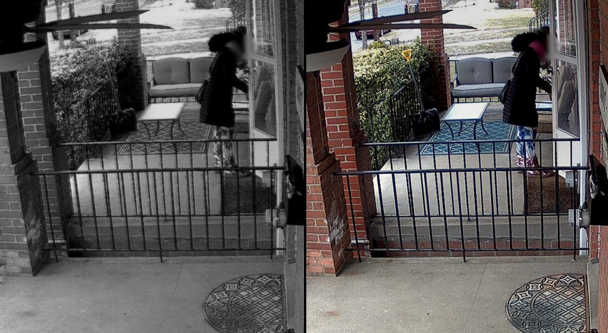

Biztonsági kamerarendszerek kiépítése
több mint 20 éves tapasztalattal
Intelligens tűzjelzők telepítése
Előzze meg a bajt intelligens tűzjelzőinkkel.
Kameráinkról
Vízállóság
Kameráink nagy része IP66-os vagy IP67-es tanúsítvánnyal rendelkezik, így nem kell aggódni amiatt, hogy a csapadék tönkretenné őket.
Éjszakai üzemmód
Kameráink a beépített infraszenzoroknak hála a sötétben is képesek kiváló képminőséget nyújtani.
Vandálbiztosság
IK10-es tanúsítvánnyal rendelkező kameráink fém váza megóvja őket a vandáloktól, így nem szorulnak rendszeres kényszercserére.
Automatikus képjavítás
Kameráink automatikusan a lehető legjobb fény és fókusz beállításokat alkalmazzák, a legjobb képminőség elérése érdekében.
Automatikus riasztások
A kamera automatikus riasztást küld az ön telefonjára ha mozgást érzékel, így azonnal értesül a betolakodóról.
Mentés a felhőbe
Kameráink támogatják a felhőbe történő mentést, ami azt jelenti, hogy a felvételek a memória sérülése vagy meghibásodása esetén se vesznek el.
Beépített mikrofon
Kameráink többsége beépített mikrofonnal is rendelkezik, így nem csak látja, hanem hallhatja is az eseményeket.
Extrém hőtűrés
Kameráink képesek ellenállni az extrém fagyoknak és hőségeknek is, így ideálisak a kültéri használatra.
Arcfelismerés
Hozzon létre adatbázisokat, melyek segítségével a kamera képes felismerni a képen látható személyeket.
Wifi támogatás
Nézze a kamerák képét az okostelefonján bárhol és bármikor.
Behatolás riasztás
Állítson be "tiltott zónákat", amelybe belépés esetén a kamera azonnal értesítést küld önnek.
Színes kép éjszaka is
Kameráink képesek a sötétben is színes képet készíteni.
